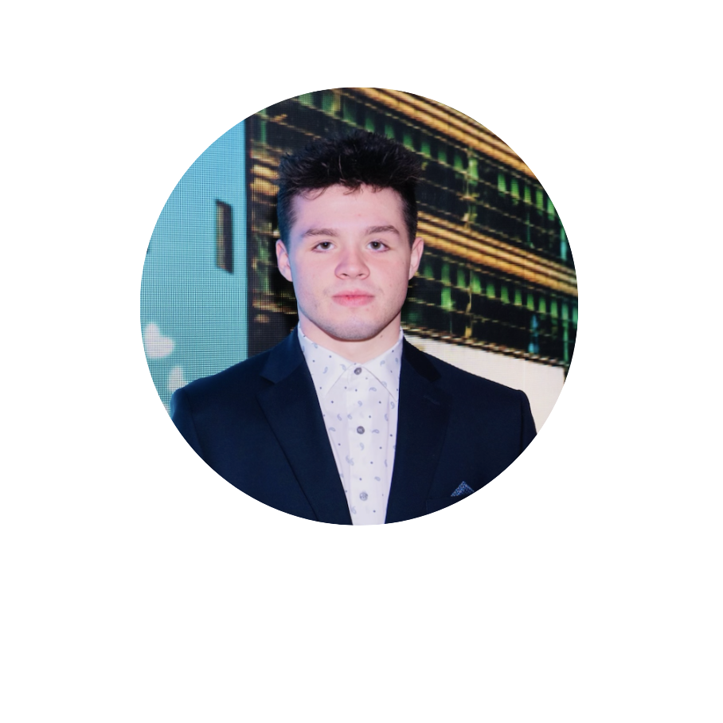

Syracuse University School of Information Studies
I’m passionate about exploring the boundaries of web design and development, blending creativity with technical expertise to craft seamless digital experiences. With a mix of technical know-how, a creative eye, and solid communication skills, I focus on delivering results that truly meet my clients' needs. Currently, I’m studying Web Design and Management at Syracuse University’s School of Information Studies, and I bring that same dedication to excellence to every project I take on.
LinkedIn Profile